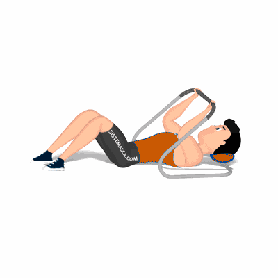

Abdominal Supra no Aparelho [1]

Exercício para fortalecimento e hipertrofia da região abdominal, reto abdominal, com enfoque na parte supra. Indicado a praticante de musculação nível iniciante e intermediário.
Ficha Técnica
Tipo: Musculação
Grupo Muscular: Abdome
Aparelho: Nenhum
Músculos: Nenhum
Como realizar
- Deite no aparelho, repousar a cabeça sobre o encosto;
- Joelhos flexionados, pés na largura do quadril, segure o aparelho com os braços relaxados;
- Realize a flexão do tronco com a força dos músculos admonais, mantendo a lombar apoiada;
- Eleve os deltoides juntamente a parte superior do tronco, músculos contraídos por alguns segundos;
- Retorne à posição inicial, repita os movimentos.
 RC STORE
RC STORE